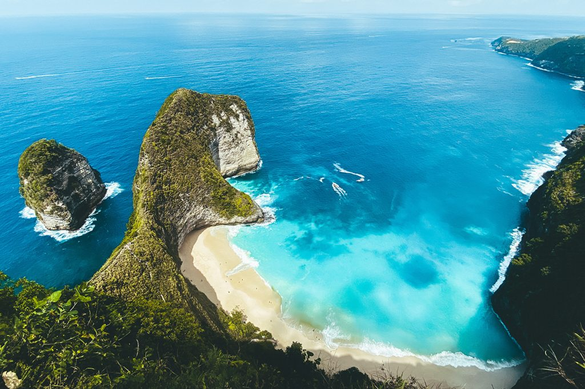
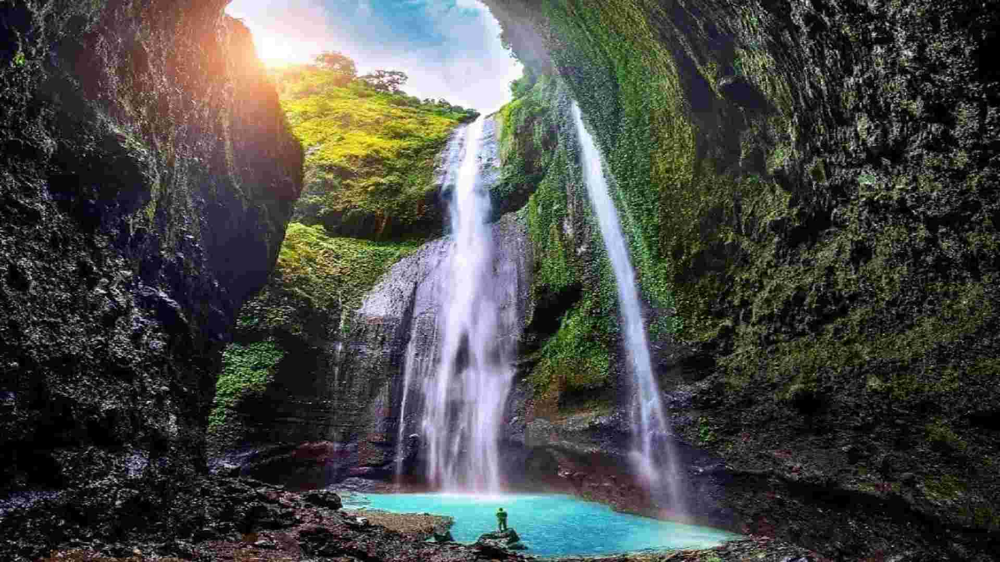
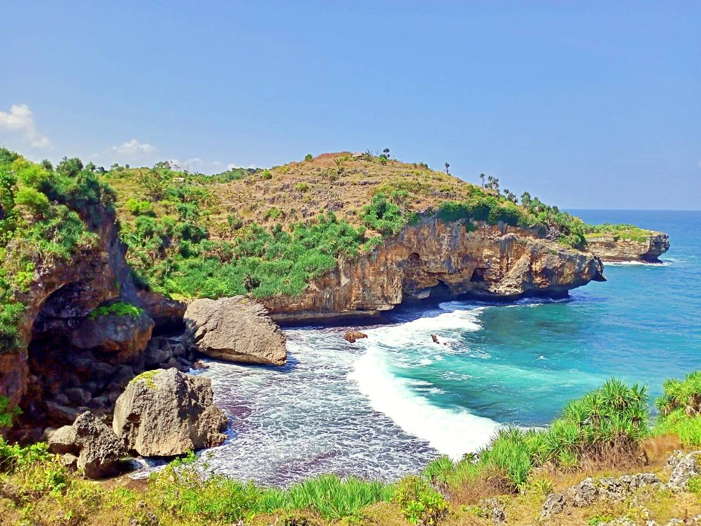

|
 |
||
| Beranda | Menu Wisata | Website pariwisata |
Destinasi wisata
berikut adalah objek wisata di jawa timur

gunung bromo gunung bromo adalah gunung berapi aktif di Jawa Timur, di dalam Taman Nasional Bromo Tengger Semeru. Gunung ini berada di Laut Pasir Tengger. |
 air terjun mardakari pura Air terjun ini adalah salah satu air terjun di kawasan Taman Nasional Bromo Tengger Semeru tepatnya di lereng Gunung Bromo. |
 Pantai Mido Pantai Mido merupakan salah satu tempat wisata terkenal yang berada di Jawa Timur. |
contact person : jelajah wisata 6285784661440 contact mail : jelajahi wisata renoanggadwisyahputra@gmail.com